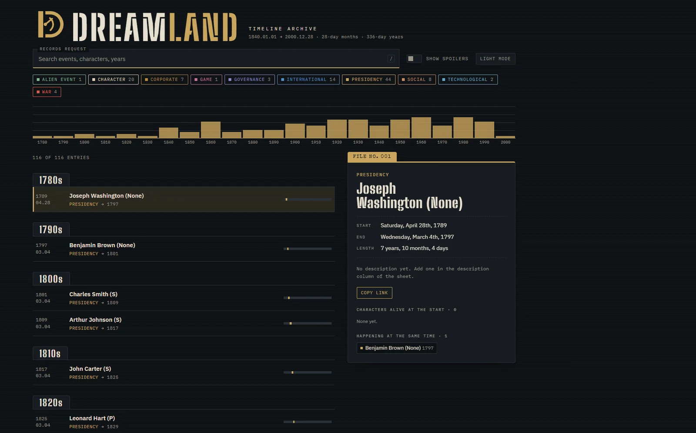
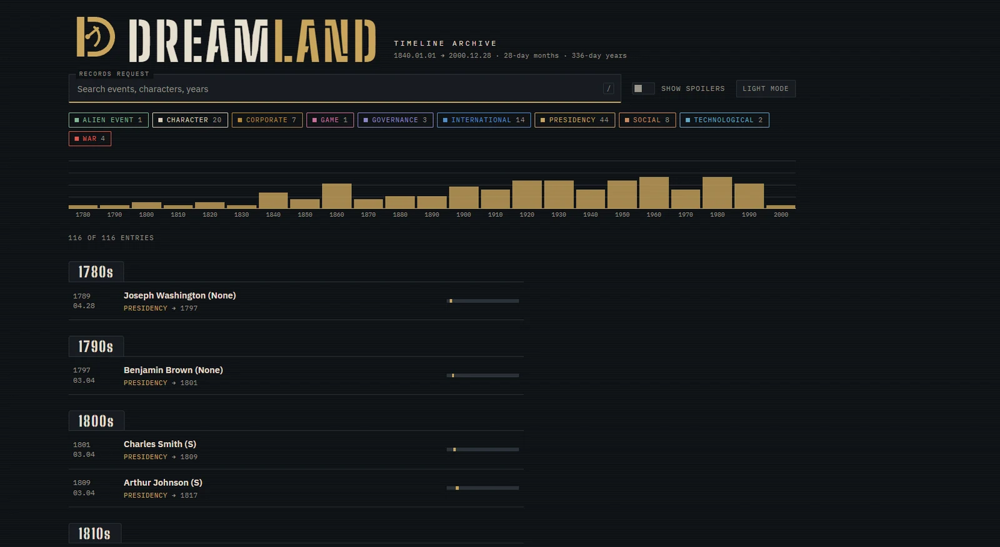

Dreamland Timeline
An interactive archive covering 160 years of a fictional world's history, styled as a declassified records system. Built so a writing team can update the lore in a spreadsheet and see it live on the site.

The problem
A fictional world with a long history gets hard to keep straight. Writers need to check what happened when, who was alive at the time and what overlapped, without digging through a spreadsheet.
An archive, not a table
The interface leans into the setting. Searching is a "records request," entries open as numbered case files, and monospace labels and stamped headers make it feel like declassified documents. The theme does real work: it makes a dense data tool feel like part of the world.
Features
- Search across events, characters and years, with a keyboard shortcut to jump to search.
- Color-coded category filters with live counts.
- A decade histogram that shows where history clusters at a glance.
- Case file panels with computed duration, characters alive at the start, and events happening at the same time.
- A spoiler toggle so the archive is safe for readers who are not caught up.
- A custom calendar with 28-day months and 336-day years, with all date math built around it.
- Light and dark modes, plus shareable links to individual entries.
Built for the people maintaining it
The data lives in a Google Sheet. Edit the sheet, refresh the page, and everyone sees the change. If the sheet is unreachable, the site falls back to a bundled CSV snapshot so it never shows an empty archive.
